Ease
Ease ist ein digitales Assistenzsystem zur frühzeitigen Erkennung und Regulation von Stress- und Panikzuständen. Das Konzept verbindet physiologische Messdaten moderner Smartwatches mit einer begleitenden Mobile App, um Nutzer:innen im Akutfall diskret zu unterstützen und langfristig bei Reflexion und Selbstregulation zu begleiten.
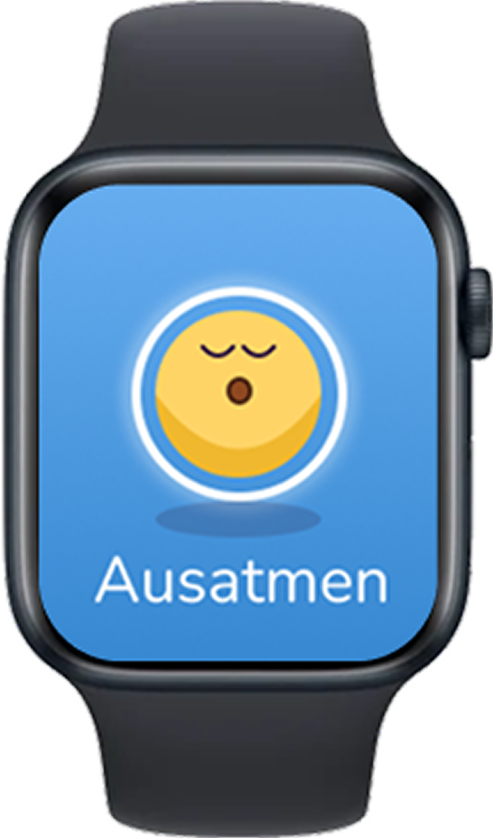
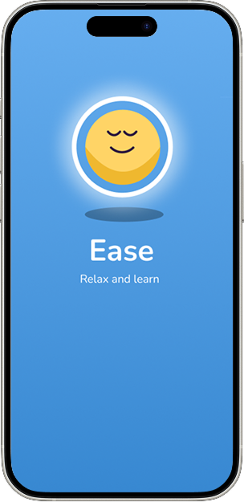
UX Research, Concept Development, Information Architecture, Interface Design
WiSe 25/26, Invention Design
Figma, Research, Wireframing
Herausforderung
Ease entstand aus der Frage, wie ein digitales System Menschen dabei unterstützen kann, Panikattacken frühzeitig zu erkennen und in Echtzeit regulierend einzugreifen. Ausgangspunkt war die Beobachtung, dass Panikattacken oft plötzlich auftreten, im Alltag stark einschränken und bestehende digitale Angebote meist erst dann helfen, wenn Betroffene aktiv Unterstützung suchen. Das Projekt sollte deshalb nicht nur informieren, sondern früh erkennen, sanft begleiten und langfristig Selbstregulation fördern.
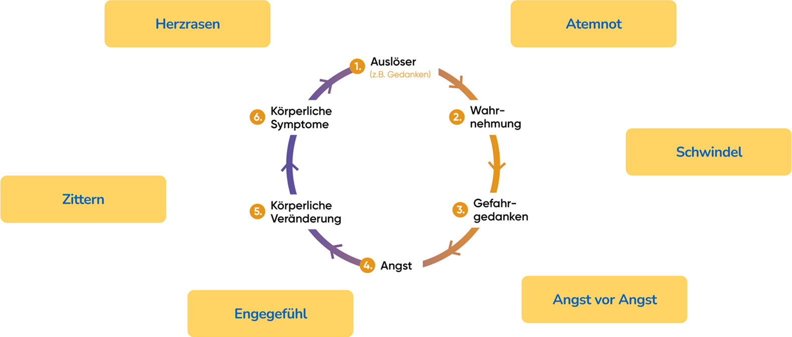
Erkenntnisse
In der Recherche wurde deutlich, dass ein wirksames System nicht erst bei subjektiver Angst ansetzen darf, sondern bereits bei physiologischen Vorzeichen. Besonders wichtig war dabei die Herzfrequenzvariabilität (HRV), weil sie früh auf Stressaktivierung hinweisen kann und im Zusammenspiel mit Herzfrequenz und Kontextdaten eine fundiertere Einschätzung ermöglicht. Aus der Analyse wurden klare Anforderungen abgeleitet: frühe Erkennung, wenige Fehlalarme, niedrigschwellige Unterstützung im Akutfall und eine sensible, nicht überstimulierende Gestaltung.
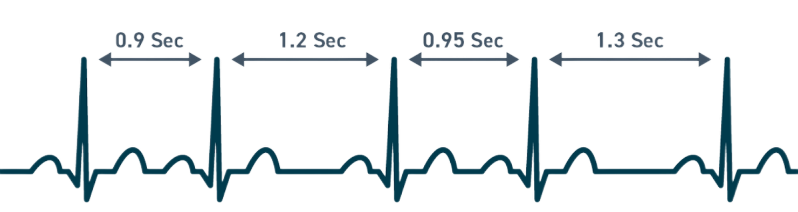
Hohe Anpassungsfähigkeit des Nervensystems
Dominanz des Parasympathikus (Ruhemodus)
Gute Stressregulation
Erholter, stabiler Zustand
Flexible Reaktion auf äußere Reize
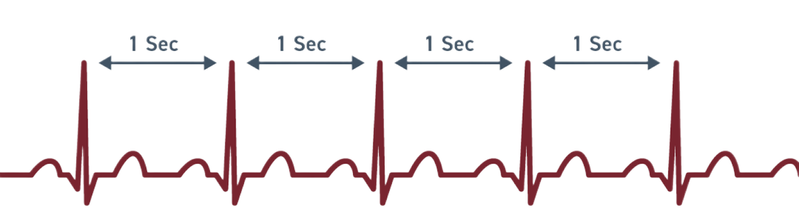
Geringe Anpassungsfähigkeit
Dominanz des Sympathikus (Alarmmodus)
Erhöhte Stressaktivierung
Erschöpfung oder Überlastung
Geringere Resilienz gegenüber Belastung
Designansatz
Auf Basis dieser Erkenntnisse wurde Ease als integriertes System aus Smartwatch-App und mobiler Companion-App konzipiert. Statt ein eigenes Wearable zu entwickeln, fiel die Entscheidung bewusst auf eine Smartwatch-App, da bestehende Geräte bereits die nötigen Sensoren mitbringen und so realistischer und ressourcenschonender nutzbar sind. Das Konzept folgt dem Prinzip Erkennen - Unterstützen - Reflektieren: Die Watch erkennt Stressmuster in Echtzeit und begleitet im Akutfall mit diskreter, klarer Unterstützung, während die Mobile App Wissen, Reflexion und Training für den Zeitraum danach bündelt. Visuell wurde dieser Ansatz durch ein ruhiges, zugängliches Designsystem mit Himmel-Sonne-Metapher, reduzierter Gestaltung und einer sanften, unterstützenden Identität übersetzt.
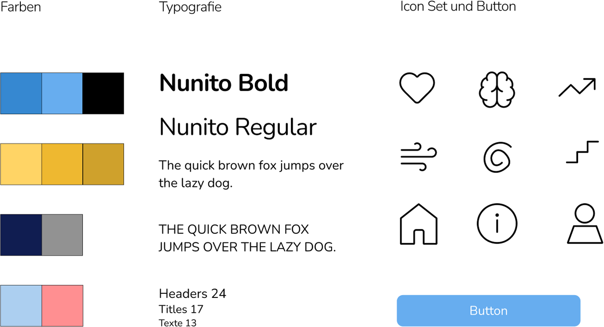
Ergebnis
Das finale Produkt verbindet akute Unterstützung auf der Watch mit langfristiger Begleitung in der Mobile App. Die Watch übernimmt die diskrete Frühwarnung und Atembegleitung im Moment hoher Stressaktivierung, während die App Wissen, Übungen, Rückblick und individuelle Reflexion bereitstellt. So entsteht kein reines Alarm-Tool, sondern ein ruhiges Assistenzsystem, das im Akutfall entlastet und darüber hinaus Selbstwirksamkeit und Orientierung stärkt.
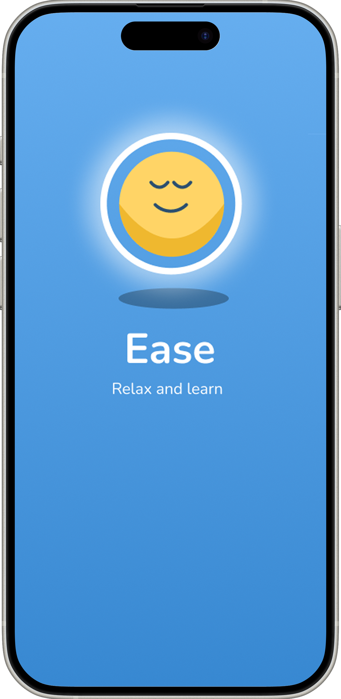
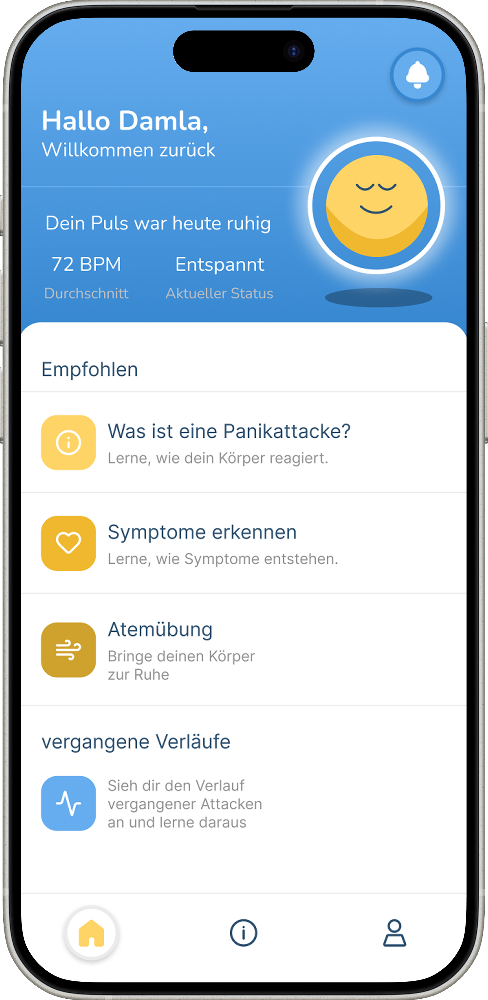
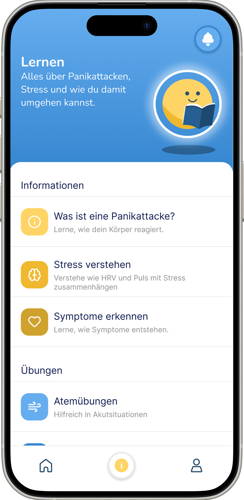
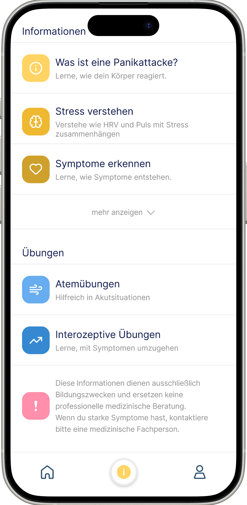
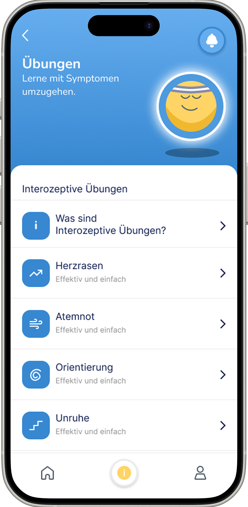
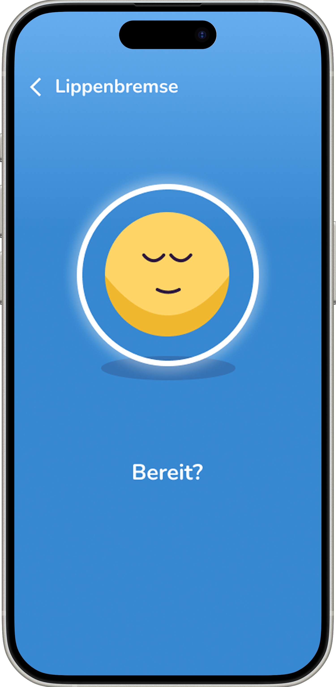
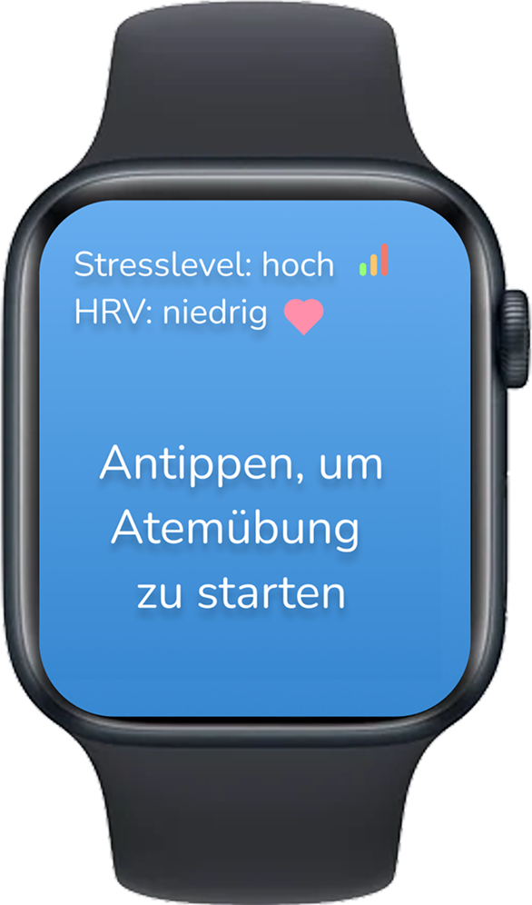
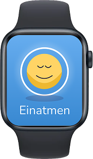
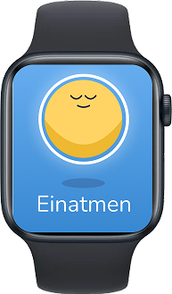
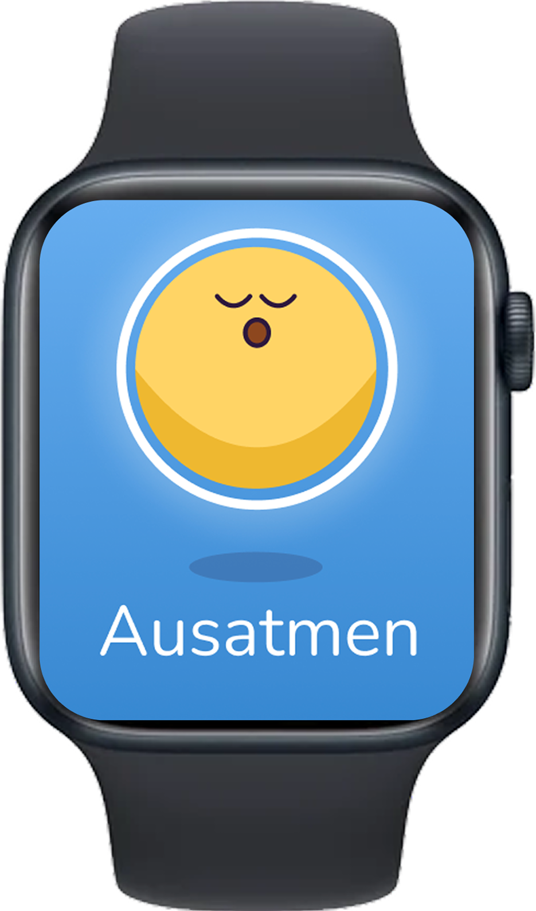
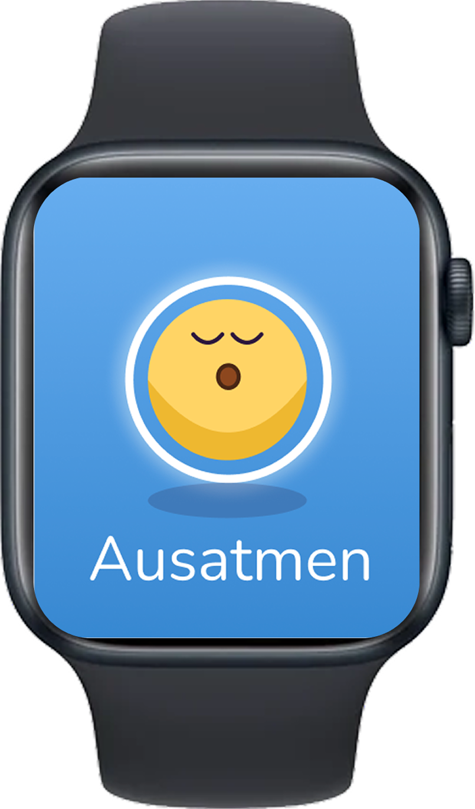
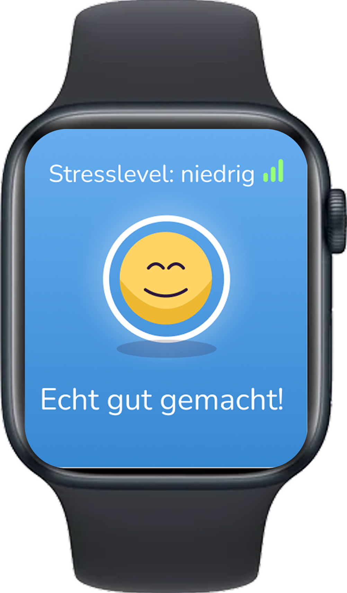